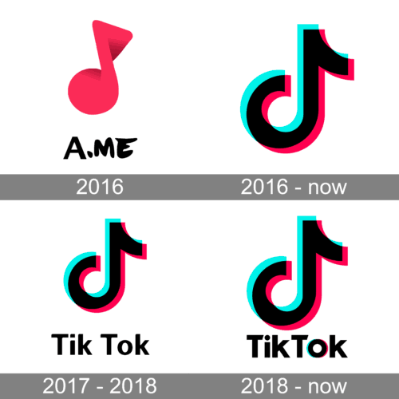

Historie sociální sítě
TikTok
Algoritmická revoluce a nová éra digitální zábavy
- Rok spuštění
- 2016 v Číně jako Douyin; mezinárodně jako TikTok od roku 2017
- Společnost
- ByteDance, založená Zhang Yimingem
Vývoj značky Douyin a TikTok

Od Musical.ly k TikToku
Kořeny TikToku sahají k aplikaci Musical.ly, spuštěné v roce 2014, která se zaměřovala na krátká hudební videa a playback. ByteDance uvedla v Číně aplikaci Douyin v roce 2016 a v roce 2017 spustila její mezinárodní verzi TikTok. V roce 2018 ByteDance spojila TikTok s Musical.ly a jeho uživateli zpřístupnila krátká videa na jedné platformě.
Jak funguje formát krátkého videa
Douyin vznikl v Číně jako mobilní aplikace pro natáčení, úpravu a sdílení krátkých videí. Mezinárodní TikTok převzal jednoduché ovládání: po otevření aplikace se video přehrává přes celou obrazovku a další obsah lze procházet gestem. Hudba, zvukové ukázky, filtry, titulky a střih přímo v aplikaci snížily nároky na tvorbu.
Spojení s Musical.ly v roce 2018 přivedlo na TikTok jeho uživatelskou komunitu zaměřenou na hudbu a playback. Díky tomu se platforma rychle rozšířila mimo původní trhy. Uživatelé mohli reagovat na cizí videa, vytvářet jejich vlastní verze a účastnit se výzev, které se šířily napříč komunitou.
Algoritmus, tvůrci a globální vliv
Výrazným prvkem TikToku je stránka „Pro tebe“, která doporučuje videa podle odhadovaného zájmu uživatele. Díky ní může získat pozornost i účet s malým počtem sledujících. Tento způsob objevování obsahu ovlivnil podobu videí na dalších platformách a dal vzniknout trendům, které rychle překračují hranice jazyků i států.
Vedle zábavy se TikTok stal místem pro vzdělávací videa, zpravodajství a propagaci hudby. Rozvoj živých přenosů a nákupních funkcí rozšířil jeho obchodní roli. Zároveň se diskutuje o ochraně soukromí, bezpečnosti mladistvých, transparentnosti doporučování a moderování obsahu.
Klíčové milníky
-
2016 · Douyin
ByteDance spustila v Číně aplikaci Douyin pro tvorbu a sdílení krátkých videí.
-
2017 · Mezinárodní TikTok
Platforma se začala rozšiřovat mimo Čínu pod názvem TikTok.
-
2018 · Spojení s Musical.ly
Po akvizici Musical.ly byly jeho účty a obsah převedeny do TikToku, který tím získal silnější mezinárodní základnu uživatelů.
-
Rychlý růst krátkých videí
Stránka „Pro tebe“ a doporučovací systém pomohly uživatelům objevovat videa i od tvůrců, které dosud nesledovali.
Vliv na společnost
TikTok zásadně ovlivnil popularitu krátkých vertikálních videí. Jeho formát inspiroval podobné funkce na dalších platformách a pomáhá šířit hudbu, módní trendy i společenská témata k širokému publiku.